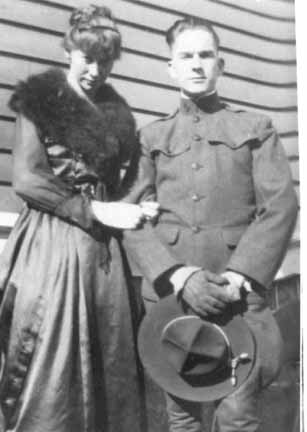
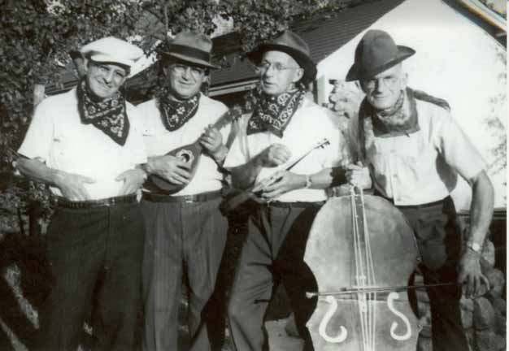
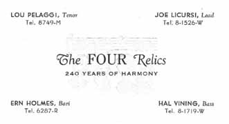

Documentation for Elmer Harold Vining - Bernice Marguerite Foye
Family Data
Elmer Harold Vining:
Bernice Marguerite (Foye) Vining and Elmer Harold Vining (in his World War I U. S. Army uniform) on their wedding day:

The Four Relics—240 years of harmony, a barbershop quartet, with Elmer Harold "Hal" Vining (bass) at far right:


Census Data
1930
1940
Elmer Harold Vining
38
48
Bernice Marguerite (Foye) Vining
32
42
Melvin Howard Vining
8
18
1930 Brockton (ward 1), Plymouth County, Massachusetts - dwelling 38, family 77. In 1930, this family was living at 50 Glenwood Street. Also living in this household in 1930 was Elmer Howard Vining (72 y., b. Massachusetts, widowed father of Elmer Harold Vining).